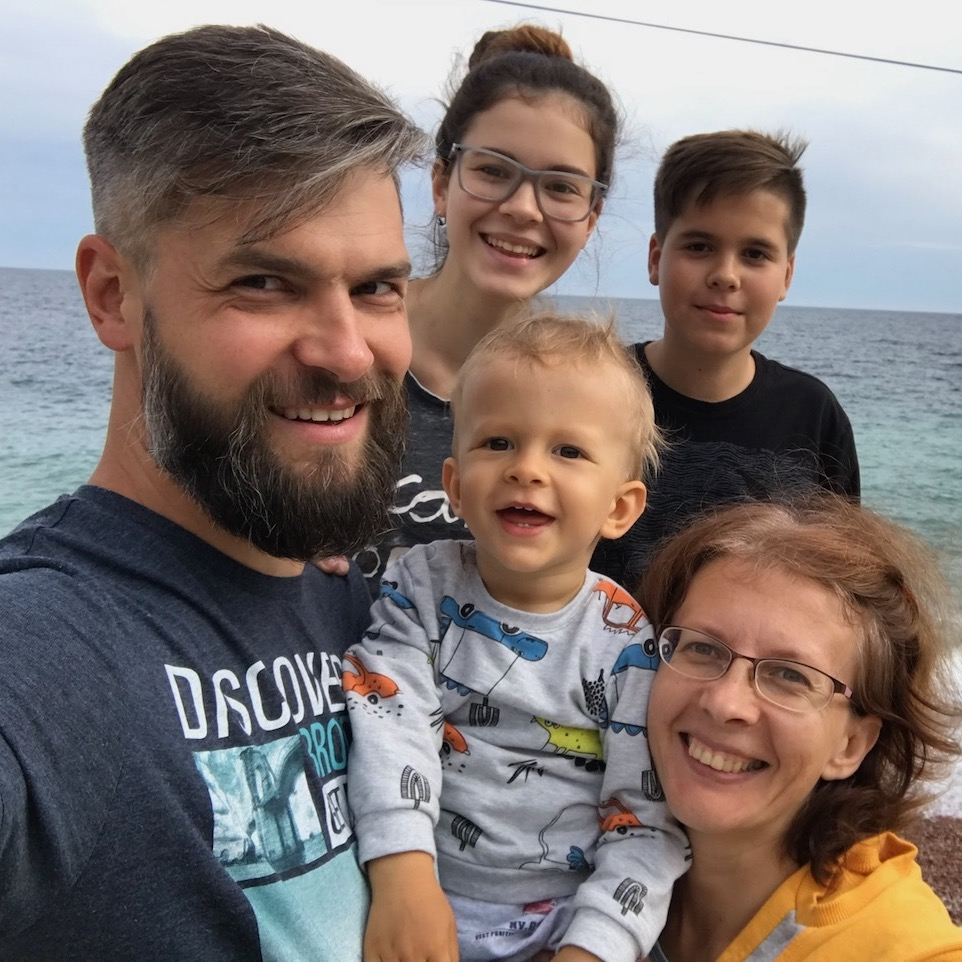

Bio
My name is Ignat Skorykh. I was born on July 27, 1976 at 3:20 pm in Mykolaiv, Ukraine. Graduated from school N20 in Mykolaiv (1993). Studied Applied Mathematics at the Moscow Institute of Physics and Technology (group 471), but was dismissed during the 3rd year of study. Since then I work as a software developer mainly as a freelance contractor. I have two lovely kids and a pretty wife.
Work
I started my career as a Java Web Developer. As the number and variety of projects grew I learned to code in PHP and to support Wordpress, Drupal websites. Later I switched to Ruby on Rails and this is the framework I mostly work with till now. For my mobile side projects I also learned iOS and Android.

Hobbies
Freediving. Vedic Astrology. Permaculture.